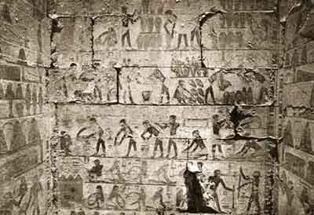
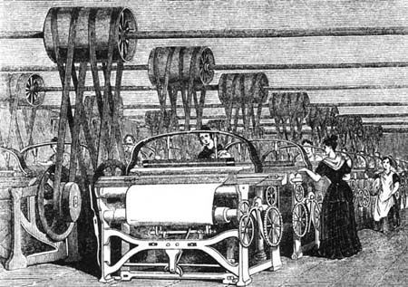
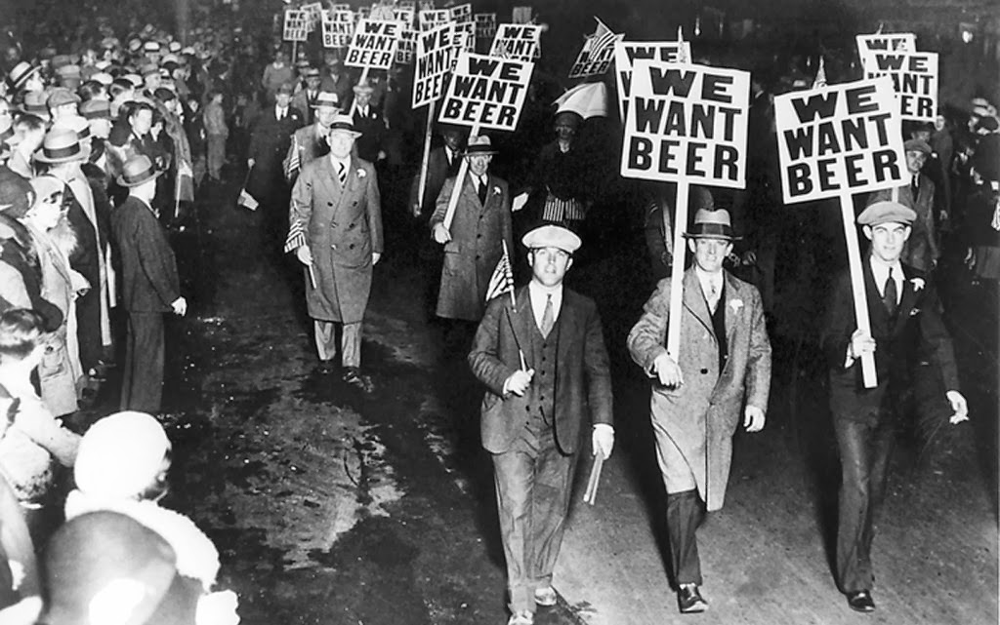
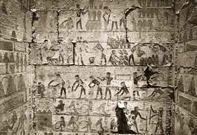
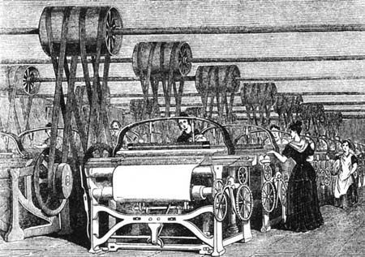
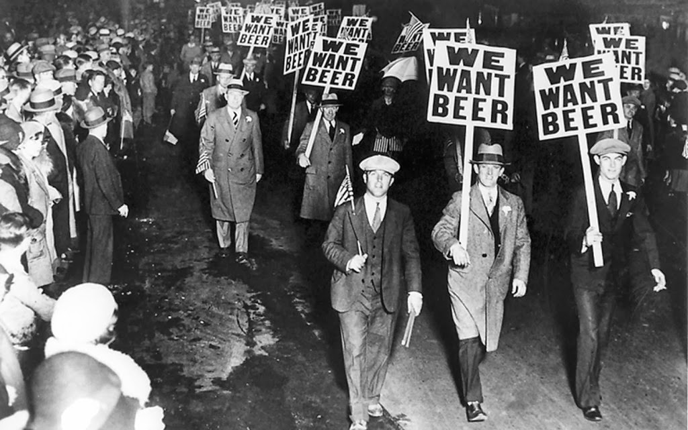

¿Cómo inició?
Inicios
 





Existen referencias de que en la remota Mesopotamia ya se producía cerveza. Se han encontrado hasta recetas de elaboración de cerveza en escritura cuneiforme. Esta bebida les gustó tanto a los egipcios, que aprendieron rápidamente a elaborar este "vino de cebada" y la hicieron su bebida nacional. Como era una bebida tan popular se elaboraba en verdaderas fábricas.La cerveza es tan antigua como nuestra civilización. Se cree que su origen está unido a los primeros asentamientos humanos hacia el 9.000 A.C., unidos al desarrollo de la agricultura y al abandono del estilo de vida nómade. Pero fue en Sumeria (Mesopotamia) por el 4.000 A.C. donde se tiene registro en unas tablas de arcilla de las primeras menciones de la cerveza. Por esto se cree que los sumerios fueron los primeros en fermentar granos como la cebada, en principio por casualidad, dejando un tipo de pan afuera en la lluvia, y que luego con el calor y levaduras salvajes fermentó. Y luego ya lo hacían fermentar en tinajas de agua.
Mesopotamia
Mesopotamia luego se convirtió en el Imperio Babilónico, donde a pesar del cambio de cultura la cerveza siguió siendo una bebida muy apreciada, también porque se consideraba un alimento. Los babilonios desarrollaron el arte de hacer cerveza a un nivel superior, creando alrededor de 20 tipos de recetas diferentes de cerveza. De hecho la primera receta de cerveza de la que se tiene registro está escrita en el Código de Hamurabi.
Los egipcios
Pero la presencia de la cerveza en la antiguedad no se limitó solo a Mesopotamia, los Egipcios también desarrollaron la cerveza, de una forma parecida. A partir de una masa de pan sin hornear que dejaban fermentar en agua y que gracias a la temperaturas y a la acción de levaduras salvajes, se convertía en cerveza. Le llamaban "zythum" o vino de cebada. Y la perfumaban con canela, miel y a veces las mezclaban con frutos, como dátiles.